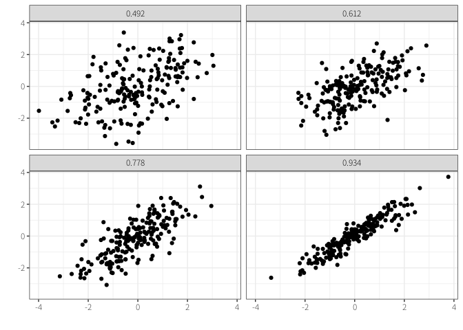
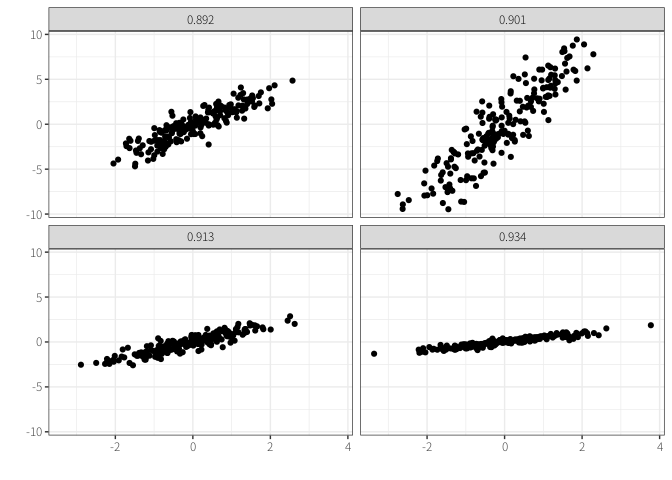
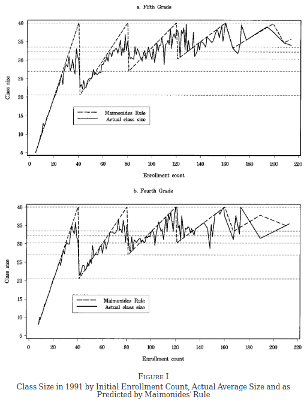

政策効果の検証：発展
技術政策学（データ科学編）
はじめに
政策の効果（因果関係）をデータから明らかにする\(\leadsto\)交絡の除去
- 交絡：原因と結果の両方に影響しているような第三の要因（交絡因子）が存在する状況

\(\leadsto\)理想としてのRCT（および自然実験）／常に実行可能とは限らない
\(\leadsto\)その他の分析手法の開発
1 統制
RCTのポイント：原因のある（政策を受けた）集団と原因のない（政策を受けなかった）集団の性質がほとんど同じである
\(\leadsto\)事後的に同じような集団を作ればよい？
- 性質を一致させるという意味で統制 (control) と呼ぶ。
1.1 マッチング
マッチング：原因のある集団とない集団から同じような対象を取り出して比較する。1
1 似たような発想で重み付け (weighting) と呼ばれる手法も用いられる。

\(\leadsto\)同じような対象を常に取り出せるとは限らない。
- 1990年に東京で生まれた生物学上の男性で大学院卒で大学教員として札幌に住んでいるビール好き？
1.2 回帰分析
もっぱら社会科学で広く使われているのは回帰分析(粕谷 2018)
\[ \textrm{平均寿命} = -9.101 + 8.405 \times \log(\textrm{一人あたりGDP}) \]
- 毎年、一人あたりGDPも平均寿命も増加しているだけでは？
\[ \textrm{平均寿命} = -391.051 + 7.770 \times \log(\textrm{一人あたりGDP}) + 0.195 \times \textrm{年} \]
\(\leadsto\)回帰分析に入れた特徴量の交絡は取り除くことができる。
- 特定の年において一人あたりGDPが増えた時に平均寿命がどの程度増えるのかを示している。
マッチングも回帰分析も（後述する手法よりも）簡単に交絡を取り除ける。
1.3 統制の限界
マッチングも回帰分析も分析に用いた特徴量の交絡のみ取り除く。
\(\leadsto\)分析に用いていない（データとして存在しない）特徴量の交絡は取り除くことはできない。
- 平均寿命と一人あたりGDPの交絡因子の候補は？
分析に用いた特徴量以外に交絡因子が存在しないことを証明することは不可能（悪魔の証明）
\(\leadsto\)もう少し因果関係と言いやすいような状況はないだろうか？
- 経済学、公衆衛生学、政治学……における因果推論革命、識別革命
1.4 相関係数
相関係数：2つの変数の関係が、どの程度、直線的であるのかを示す指標

- 相関係数が高い\(\neq\)影響が大きい

- 非線形な関係は分からない
2 回帰不連続デザイン
回帰不連続デザイン (regression discontinuity design: RDD)：ある基準を満たすかどうかで、原因の有無が分かるような状況を使ってみる。
- とある資格（例えば英検）を取るといい給料の仕事に就職しやすくなるのか？
- 基準をぎりぎり満たした人と満たせなかった人はほとんど同じような集団かも？
\(\leadsto\)もし基準の前後で「ジャンプ」が存在していれば、それは効果と言えそう。
- 医療費負担の引き下げは健康に資するのか？
- 少人数教育は学力の向上に資するのか？

- 女性政治家（市長）は男性と異なるのか？
- 政治学でよく使われるのは、ギリギリ当選した場合と落選した場合の比較
- 選挙広告は投票率を上げるのか？
- 地理的境界線もよく使われている。
3 差分の差
3.1 前後即因果の誤謬
前後即因果の誤謬：結果の前に生じたものを原因とみなす誤り
\(\leadsto\)ある事象Aが起きた後に事象Bが生じたからといってAがBの原因とは言い切れない
- とある資格（例えば英検）を取るといい給料の仕事に就職しやすくなるのか？
- もちろん、原因の有無で比較しても意味はない。
3.2 差分の差
なぜ前後比較はダメなのか？\(\leadsto\)時間トレンドがあるから
- 時間トレンド：原因の有無にかかわらず一定の方向へ変化する傾向
差分の差 (difference in differences: DID) ：原因のなかったグループで時間トレンドを計算し、原因のあったグループの時間トレンドを除去する。
- 資格を取った人の給料の増加分から資格を取らなかったひとの給料の増加分（時間トレンド）を引く。
- 最低賃金の上昇は雇用を減らすのか？
- 難民の受け入れは賃金や個用を悪化させるのか？
- ヒトラーの演説はナチスへの支持を高めたのか？

3.3 前後比較が可能な状況
時間トレンドが無視可能な状況であれば、前後比較による効果が分かる。
- 偶然（予期しない）出来事が起こった場合
- テロリズムは政府への支持を高めるか？
- 出来事の直前と直後（RDDの応用）を比較する場合
- 首脳の訪問は好感度を上げるのか？
3.4 合成統制法
合成統制法 (synthetic control method: SCM)：政策が起こった対象が「もし政策を行っていなかった場合」をその他の事例から合成して比較する
- 経済の自由化は経済成長に貢献するのか？
4 操作変数法
操作変数法 (intrumental variable: IV)：原因のみに影響し、結果には直接影響しない要因（操作変数）を用いて交絡を除去する
- とある資格（例えば英検）を取るといい給料の仕事に就職しやすくなるのか？
- とある資格を取るための補助をランダムに行う\(\leadsto\)その補助を受けて資格を取れるかどうかはランダム
- 民主主義は経済成長に貢献するのか？

- ナチスはプロパガンダによって支持を獲得できたのか？
5 因果推論の注意点
5.1 サンプルの代表性
無作為化比較試験：無作為に処置を割り当て\(\leadsto\)効果を推定
- 内的妥当性 (internal validity)：手元にあるデータの中で正しく因果推論できる
無作為抽出 (random sampling)：特定の集団から一部を無作為に取り出すこと
- 外的妥当性 (external validity) ：分析結果が分析に用いたデータ以外にも当てはまる
- （サンプルの）代表性：サンプルにおける属性（性別や年齢など）の割合が本当に知りたい集団と似ている。
- たとえ実験ではなくても世論調査などをする場合は無作為抽出は必要
無作為割り当てができていても無作為抽出をしていなければ、分析結果が元々の集団に当てはまるかは分からない。
- もちろん、無作為抽出でも別の集団については当てはまるか分からない。
オンラインのサンプルは市民を代表しているのか？
- （スペインとアメリカでは）Twitterユーザーは男性、都市部の住民、政治的に極端な人が多い、あるいは多くのツイートをしている(Barberá と Rivero 2015)
- （アメリカでは）調査会社のサンプルに比べてクラウドソーシングの参加者の属性は偏っている(Weinberg, Freese, と McElhattan 2014)

- ただし、RCTの結果はどちらでも同じような傾向を持つ(Weinberg, Freese, と McElhattan 2014)
5.2 生態学的誤謬
生態学的誤謬 (ecological fallacy)：集団レベルの結果と個人レベルの結果は同じになるとは限らない。
- 平均収入と支持政党の関係は州と個人で一致するか？(Gelman ほか 2007)
5.3 不均一効果
政策の効果はあらゆる集団に対して同じとは限らない。
- 年齢や性別、学歴、経済状況……などによって効果は変わりうる。
\(\leadsto\)条件ごとに集団を分割して効果を推定する。
5.4 一般均衡効果
RCTでは集団全体から一部を取り出して、政策の有無を決定する。
\(\leadsto\)実際に政策を受けるのは全体から見るとごく一部
政策として集団全体に実施した場合は、RCT通りの結果にならないかもしれない。
\(\leadsto\)集団全体における効果（一般均衡効果）が生じる。
- 職業訓練や教育が賃金を上げるとしても、全員がプログラムを受けるとその効果は相殺？
- 少人数にSNSをやらせても意味はない？
効果が波及する場合：RCTは適切に政策の効果を推定できない。
6 実証分析への示唆
実際に因果推論しなくても、実証分析をする上で重要な点はある（と信じている）
6.1 計量分析
とりあえず実際のデータに触れてみるという姿勢は大事
関係分野のデータ分析の研究に触れてみるのも大事
- 案外、反直観的な（予想と異なる）結果が得られることはある。
- 政治学や経済学の一般向けの本(Banerjee と Duflo 2020; 北村 2022)
データ分析だからといって鵜呑みにするのも危険
6.2 データの利用可能性
6.2.1 ミクロデータ
ミクロ（個票）データが利用可能であれば、様々な分析ができる。
- 政治家は有能なのか？
\(\leadsto\)ミクロデータのほうが価値は高い。
- ミクロデータ\(\leadsto\)マクロデータ（その逆ではない）
6.2.2 機械判読可能なデータ
それ以前の問題として、公開されているデータを機械判読可能な (machine-readable) データとして公開する必要
6.3 事例分析
事例分析によって効果を示す際には注意が必要(久米 2013; 伊藤 2022)
- 差異法：同じような事例だが、原因の有無が異なるような事例を比較する
- 理想としては原因がランダムに生じている状況
- 原因が生じた直前と直後の比較
- 時間トレンドの確認
- 一致法：異なる事例だが、原因と結果が生じている事例を比較する
- 有力な原因を提案できるが、因果関係・効果を主張するのは難しい
- 反実仮想：仮に原因がなかったらどうなっていたのかを明らかにして、原因であることを説得する
効果を示すという目標以外の方策も
- 過程追跡：原因から結果での出来事の連鎖を辿って、因果関係・プロセスを示す
- 逸脱事例：通説では説明できない事例を提示して、通説を修正する
参考文献
Acemoglu, Daron, Simon Johnson, と James A Robinson. 2001. 「The colonial origins of comparative development: An empirical investigation」. American economic review 91 (5): 1369–1401.
Adena, Maja, Ruben Enikolopov, Maria Petrova, Veronica Santarosa, と Ekaterina Zhuravskaya. 2015. 「Radio and the Rise of the Nazis in Prewar Germany」. The Quarterly Journal of Economics 130 (4): 1885–1939.
Angrist, Joshua D, と Victor Lavy. 1999. 「Using Maimonides’ rule to estimate the effect of class size on scholastic achievement」. The Quarterly journal of economics 114 (2): 533–75.
Banerjee, Abhijit V., と Esther Duflo. 2020. 絶望を希望に変える経済学 : 社会の重大問題をどう解決するか. 日経BP日本経済新聞出版本部; 日経BPマーケティング (発売).
Barberá, Pablo, と Gonzalo Rivero. 2015. 「Understanding the political representativeness of Twitter users」. Social Science Computer Review 33 (6): 712–29.
Billmeier, Andreas, と Tommaso Nannicini. 2013. 「Assessing economic liberalization episodes: A synthetic control approach」. Review of Economics and Statistics 95 (3): 983–1001.
Brollo, Fernanda, と Ugo Troiano. 2016. 「What happens when a woman wins an election? Evidence from close races in Brazil」. Journal of Development Economics 122: 28–45.
Card, David. 1990. 「The impact of the Mariel boatlift on the Miami labor market」. Ilr Review 43 (2): 245–57.
Card, David, と Alan B Krueger. 1994. 「Minimum Wages and Employment: A Case Study of the Fast-Food Industry in New Jersey and Pennsylvania」. The American Economic Review, 772–93.
Dal Bó, Ernesto, Frederico Finan, Olle Folke, Torsten Persson, と Johanna Rickne. 2017. 「Who becomes a politician?」 The Quarterly Journal of Economics 132 (4): 1877–1914.
Gelman, Andrew, Boris Shor, Joseph Bafumi, と David Park. 2007. 「Rich State, Poor State, Red State, Blue State: What’s the Matter with Connecticut?」 Quarterly Journal of Political Science 2: 345–67.
Goldsmith, Benjamin E, Yusaku Horiuchi, と Kelly Matush. 2021. 「Does public diplomacy sway foreign public opinion? Identifying the effect of high-level visits」. American Political Science Review 115 (4): 1342–57.
Keele, Luke J, と Rocio Titiunik. 2015. 「Geographic boundaries as regression discontinuities」. Political Analysis 23 (1): 127–55.
Selb, Peter, と Simon Munzert. 2018. 「Examining a most likely case for strong campaign effects: Hitler’s speeches and the rise of the Nazi party, 1927–1933」. American Political Science Review 112 (4): 1050–66.
Shigeoka, Hitoshi. 2014. 「The effect of patient cost sharing on utilization, health, and risk protection」. American Economic Review 104 (7): 2152–84.
Weinberg, Jill D, Jeremy Freese, と David McElhattan. 2014. 「Comparing data characteristics and results of an online factorial survey between a population-based and a crowdsource-recruited sample.」 Sociological Science 1.
久米郁男. 2013. 原因を推論する : 政治分析方法論のすゝめ. 有斐閣.
伊藤修一郎. 2022. 政策リサーチ入門 : 仮説検証による問題解決の技法. 増補版. 東京大学出版会.
北村周平. 2022. 民主主義の経済学 : 社会変革のための思考法. 日経BP.
筒井淳也. 2023. 数字のセンスを磨く : データの読み方・活かし方. 光文社新書. 光文社.
粕谷祐子. 2018. 「政治学における「因果推論革命」の進行 (特集 変わる世界、変わる研究 – ディシプリン/トピック編)」. アジ研ワールド・トレンド 269 (3月): 70–71.
荻原和樹. 2023. データ思考入門. 講談社現代新書. 講談社.
菅原琢. 2022. データ分析読解の技術. 中公新書ラクレ. 中央公論新社.